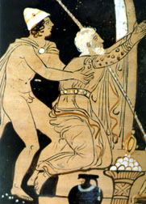

Tantalus
Tantalus (TAN-ta-luss): a Greek king (and a son of Zeus) whose overconfidence made him attmempt to fool the gods.
Hijynx
Zeus invited him to Mount Olympus for a dinner with the gods. Tantalus would steal the gods' special food (ambrosia and nectar) in an attempt to make his citiznes of his kingdom immortal.
In his most notable antic, Tantalus invited the gods over for dinner, using a non-traiditional menu.
Tantalus for whatever reason, had decided his son, Pelops, would make a great dinner for the gods.
Chopping his child into segments, then boiled in the stew, he attemped to fool the gods at his macabre dinner party. Most of the gods caught on and refused the entree. Demeter, stressed from being worried about Persephone, who had been kidnapped, ended up eating a small peice of Pelops' shoulder. oops.